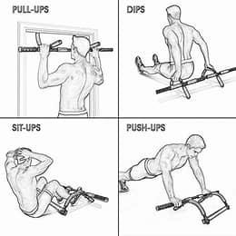
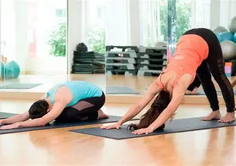

🏋️ RUTINAS DE EJERCICIO
Mejora tu salud física, mental y energía diaria
💡 Importancia del ejercicio
Hacer ejercicio diariamente ayuda a prevenir enfermedades, mejora el estado de ánimo, fortalece los músculos y aumenta la energía.
🔥 Calentamiento
El calentamiento es una parte fundamental antes de cualquier actividad física. Su objetivo principal es preparar el cuerpo y la mente para el esfuerzo, aumentando progresivamente la temperatura corporal y activando los músculos.
Realizar un buen calentamiento ayuda a mejorar la circulación de la sangre, lo que permite que el oxígeno llegue de manera más eficiente a los músculos. Esto reduce el riesgo de lesiones como tirones, calambres o esguinces.
Un calentamiento adecuado debe durar entre 5 y 10 minutos e incluir movimientos suaves como trotar en el lugar, saltos ligeros, rotaciones de brazos, cuello y cadera, además de estiramientos dinámicos.
También es importante enfocarse en la respiración, inhalando y exhalando de forma controlada para oxigenar mejor el cuerpo y mantener un ritmo constante durante el ejercicio.
Nunca debes saltarte esta etapa, ya que es la base para un entrenamiento seguro y efectivo. Un cuerpo bien preparado rinde más y se recupera más rápido después del ejercicio.
💪 Piernas y glúteos
Sentadillas, zancadas, puente de glúteos y step-ups para fuerza inferior.
Ver más
🏋️ Parte superior
Flexiones, fondos, curl de bíceps y remo para fortalecer brazos y pecho.
Ver más
🧘 Estiramientos
Relaja músculos después del ejercicio para evitar dolor y lesiones.
🌟 Beneficios del ejercicio diario
- ✔ Mejora la salud del corazón
- ✔ Reduce el estrés y ansiedad
- ✔ Aumenta la energía diaria
- ✔ Mejora la postura corporal
- ✔ Ayuda a dormir mejor